Cartes de carreaux, Transitions et Variations
Sommaire
- I. Un tableau comme carte
- II. Un système de transition
- III. Variations
- IV. Multitransitions
- V. Historique
- VI. Crédits
I. Un tableau comme carte
Le jeu WarCraft II (1995) propose une vue de dessus d'une carte où se déroule la partie. Cette carte est stocké à l'aide d'un tableau. Chaque case du tableau contient une indication de textures à utiliser. Par exemple, une case peut contenir la valeur 0, qui désigne de l'eau, ou 1 de la terre. Prenons une carte de 5 cases en largeur et en hauteur, une taille que nous notons 5x5, et affichons la dans un premier temps avec des bordures délimitant chaque case (A) puis sans (B) :
 | | | | |
| |
|||
| |
|||
| |
|||
| | | | |
| | | | |
| |
|||
| |
|||
| |
|||
| | | | |
| 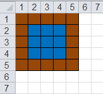 |
On voit que l'ensemble de la carte, qui comporte 25 cases, ne fait que répéter deux textures. On peut ainsi décrire facilement de vastes étendues à partir de peu d'éléments. On appelle ses éléments d'après l'anglais tiles, que l'on pourrait traduire par carreau ou tuile, et cette technique le tiling, traduisible par carrelage. Une case du tableau correspond donc à un carreau. Pour construire et éditer une telle carte, on peut construire un éditeur de carte ou utiliser un simple tableur comme Microsoft Excel ou LibreOffice Calc. La même carte sous Excel se présenterait comme (C).
Si on enlève les bordures de notre exemple (B), le résultat est déjà plus convaincant. Néanmoins, la transition de l'eau vers la terre est un peu abrupte, elle ne fait pas naturelle. Pour améliorer le résultat, on va créer un jeu de textures spéciales qui assureront des transitions plus douces et naturelles.
II. Un système de transition
Nous allons établir un système de transition composé de :
- cinq règles de transition et
- un système de numérotation.
II.A Cinq règles de transitions
Nous allons établir un ensemble de règles pour les transitions :
- Première règle, on établit une hiérarchie d'influence : un carreau d'eau est influencé par un carreau de terre. C'est-à-dire que si un carreau jouxte un carreau de terre, c'est le carreau d'eau qui changera pour refléter une transition : sa texture d'eau simple sera remplacée par une texture de transition entre l'eau et la terre : on notera
eau < terre - Deuxième règle, celle d'unicité : un carreau ne peut avoir autour de lui qu'un seul type d'influenceur. On a vu que les carreaux d'eau sont influencés par les carreaux de terre. Imaginons un autre type de carreau, le sable, qui influence également l'eau. Un carreau d'eau ne pourra être entouré que d'un seul type d'influenceur dans sa proximité immédiate.
- Troisième règle : celle de l'étau : un carreau ne peut avoir à sa gauche et à sa droite un carreau l'influençant en même temps. De même, un carreau ne peut avoir en haut et en bas un carreau l'influençant en même temps. Les configurations représentées ci-dessous sont donc interdites :

- Quatrième règle, celle de la continuité : Les carreaux influenceurs doivent être consécutifs. Toutes les configurations discontinues sont interdites comme :
- Cinquième règle, qui est une exception à la quatrième, est celle des coins en opposition : la configuration où deux coins en opposition sont des influenceurs et ceux sont les seuls influenceurs est autorisée. Cela concerne les deux configurations ci-dessous :
II.B Système de numérotation
Un carreau est entouré de 8 autres carreaux. Nous les notons et les numérotons comme ci-dessous, en partant du carreau en haut à gauche et en les parcourant dans le sens horaire :
| Carreau | Nord-Ouest | Nord | Nord-Est | Est | Sud-Est | Sud | Sud-Ouest | Ouest |
| Code | NO | N | NE | E | SE | S | SO | O |
| Numéro | 0 | 1 | 2 | 3 | 4 | 5 | 6 | 7 |
| 2Numéro | 1 | 2 | 4 | 8 | 16 | 32 | 64 | 128 |
Autrement représenté ainsi :
| NO | N | NE |
| O | E | |
| SO | S | SE |
| 0 | 1 | 2 |
| 7 | 3 | |
| 4 | 5 | 6 |
| 1 | 2 | 4 |
| 128 | 8 | |
| 16 | 32 | 64 |
La règle 2 dit que s'il y a un ou plusieurs carreaux influenceurs, ils seront tous du même type. Cela revient à un choix binaire, savoir si c'est le carreau est un influenceur ou pas. Il y a donc 28, soit 256, possibilités. Pour un carreau, chaque possibilité de configuration des carreaux qui l'entourent est identifiée par un nombre qui est le résultat de l'addition de 2position pour chaque carreau influenceur. Les règles 3 et 4 suppriment de nombreuses combinaisons et réduisent à 14 le nombre de textures nécessaires pour faire la transition entre eau et terre.
II.C Exemples de configurations
À présent, passons aux exemples. Voici sept exemples de configurations de carreaux entourant le carreau central dont une interdite :
| ||
| | |
| | |
| |
|
E.
|
||
| |
|
| ||
La configuration interdite est la F. La rangée du haut présente deux carreux influenceurs discontinus. De plus, le carreau d'eau de la rangée du haut est entouré horizontalement par deux carreux de terre l'influençant, ce qui est également illégal. Pour les 6 configurations valides, nous allons ensuite calculer l'identification de chaque configuration :
- La position 0 a un carreau qui influence celui du milieu. Pour le calcul, on prend donc 20 soit 1.
- Les positions 0 et 1 ont un carreau qui influence celui du milieu. Pour le calcul, on additionne donc 20 + 21 soit 3.
- Les positions 0, 1 et 2 ont un carreau qui influence celui du milieu. Pour le calcul, on additionne donc 20 + 21 + 22 soit 7.
- Les positions 1 et 2 ont un carreau qui influence celui du milieu. Pour le calcul, on additionne donc 21 + 22 soit 6.
- La position 2 a un carreau qui influence celui du milieu. Pour le calcul, on prend donc 22 soit 4.
- Configuration invalide d'après nos règles.
- La position 1 a un carreau qui influence celui du milieu. Pour le calcul, on prend donc 21 soit 2.
On dessine alors dans le carreau central une texture qui représente la transition qu'il va adopter :
| ||
| 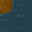 | ||
| | |
| | |
| |
|
E.
|
||
| ||
On remarque quelque chose de très important pour la mise en œuvre de nos règles : si le nord est un carreau influenceur, peut importe la valeur des deux coins associés, ici nord-ouest et nord-est.
Comme nous l'avons vu dans ces exemples, on peut associer un identifiant de configuration pour déterminer la texture de transition à prendre :
- 1 appelle la transition
- 3, 7, 6 et 2 appelle la transition
- 4 appelle la transition
Cet identifiant est un nombre compris entre 0 et 255, avec certains nombres interdits par nos règles.
II.D Correspondances configuration-transition
Il faut à présent construire une correspondance entre les configurations et les 14 transitions possibles. Cette correspondance peut se faire à l'aide d'une table ou d'une fonction. En entrée, on a le numéro de configuration, en sortie le numéro de la texture à prendre. Il faut travailler avec deux tableaux : celui de départ, où sont stockées les textures d'eau et de terre, et celui d'arrivée, où on stocke les transitions ou l'absence de transition. L'algorithme est le suivant :
Pour chaque colonne faire
Je calcule l'identifiant de configuration de la case(colonne, ligne) du tableau de départ
Si il s'agit d'une configuration interdite alors
lever exception ConfigurationInterdite
Sinon
Je mets dans le tableau d'arrivée la transition correspondant à l'identifiant
Fin Si
Fin Pour
Fin Pour
II.E Exemples de résultats
Ci-dessous sont les 14 transitions possibles de la terre vers l'eau dans notre système ainsi que le carreau "sans transition" pour l'eau :
| 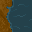 |  |
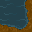 | 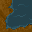 |  |
 |
 |
||||||||
| 1 | 2 | 3 | 4 | 5 | 6 | 7 | 8 | 9 | 10 | 11 | 12 | 13 | 14 | 15 |
En reprenant les configurations précédentes et en appliquant à chaque carreau notre algorithme de transition, on obtient au final :
| ||
| | |
| | |
| |
|
E.
|
||
| ||
Pour reprendre notre exemple initial, nous avons ce résultat là qui fait beaucoup plus naturel :
| | | | |
| | | |
|
| |
|||
| |
|||
| | | | |
| | | | |
| | | |
|
| |
|||
| |
|||
| | | | |
III. Variations
Pour obtenir un effet encore plus de naturel, on peut également faire varier les textures de transition et sans transition. Il suffit d'avoir plusieurs variantes de textures et de les alterner. On veillera à ne pas trop répéter les variations pour garder un effet naturel.
Voici des exemples de variations pour la texture sans transition d'eau avec des plantes aquatiques :
| 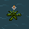 | 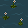 | |||||||
| 1 | 2 | 3 | 4 | 5 | 6 | 7 | 8 | 9 |
Voici des exemples de variations pour la texture sans transition de terre avec des rochers :
|
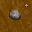 | 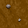 | 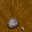 | 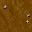 | 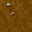 |
| 1 | 2 | 3 | 4 | 5 | 6 |
Et bien sûr, on peut combiner transitions et variations en offrant plusieurs textures possibles pour la même transition :
|
|
|
|
||||||||||
| 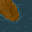 | 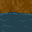 | 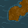 | 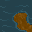 | 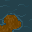 |  |
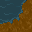 | 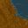 | 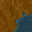 | 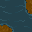 | 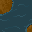 | |||
| 1 | 2 | 3 | 4 | 5 | 6 | 7 | 8 | 9 | 10 | 11 | 12 | 13 | 14 |
IV. Multitransitions
Nous avons pour l'instant mis en jeu une seule transition : de l'eau vers la terre, avec l'eau étant influencée par la terre. Mais on peut étendre ce principe à plusieurs transitions. Nous ajoutons ici l'herbe et la terre séchée. Nous commençons par construire un tableau qui indique "qui influence qui", une case rouge marquant que la texture sur la ligne est influencée par la texture sur la colonne, une case verte marquant que la texture sur la ligne influence la texture sur la colonne, une case grise indique une identité :
| Textures | Eau | Terre | Terre séchée | Herbe | Herbe sombre | Eau profonde |
| Eau | ||||||
| Terre | ||||||
| Terre séchée | ||||||
| Herbe | ||||||
| Herbe sombre | ||||||
| Eau profonde |
Ce tableau montre, par ses cases vertes et rouges, les seules cases qui doivent être adjacentes pour que l'effet de transition soit possible. Nous pouvons également écrire la hiérarchie ainsi :
eau profonde < eau < terre < terre séchée
eau profonde < eau < terre < herbe < herbe sombre
Il y a donc 5 transitions différentes. Nous définissons ensuite les textures, les 14 nécessaires pour créer les transitions, ainsi que les textures de base, sans transition, et les variations. Nous obtenons ensuite les effets suivants :
V. Historique
Pendant longtemps j'utilisais les textures de Yoda Stories (1997) pour mes projets personnels mais, outre le fait qu'elles soient sous copyright, elles ne nécessitaient pas de transitions. En cherchant à les remplacer par des textures libres de droits comme celles de LPC ou Wyrmsun, j'ai commencé à rechercher comment négocier les transitions.
| Mai 2020 | Reprise de l'article en portant à 14 le nombre de transitions (coins en diagonale autorisés). Je refais le format d'encodage du nom des textures pour qu'ils correspondent à celui du répertoire des assets. |
| Avril 2019 | Je continue sur la V3 : ajout de deux textures supplémentaires et de leurs transitions : herbe sombre et eau profonde, en obscurcissant herbe et eau (-20 de luminosité), pour un total de 6 textures de base. Ajout des coins doubles opposés pour la transiton eau/terre. Production de la carte au format JavaScript depuis Excel. |
| Mars 2019 | 3ème itération, en Python, faite à partir de la 2ème. Multitransitions (4 : eau, terre, herbe, terre séchée), variations. Règle de continuité. Écrite pour la rédaction de l'article. Lecture depuis tableur. |
| Août 2018 | 2ème itération, en JavaScript. Multitransitions (3 : eau, terre, herbe). Si on a pas de bordures, alors on peut avoir des coins. Lecture depuis code. |
| Janvier-Février 2018 | 1er itération, en Python. Multitransitions (4 : eau, terre, herbe, sable). Règle de non-encerclement vertical et horizontal. Lecture depuis tableur. |
| Janvier 2018 | Lecture directe du format tableur depuis Python avec le module xlrd |
| Juin 2017 | Première carte faite avec un tableur, lue via une conversion au format CSV. |
| Mai 2017 | Recherches sur la transition. |
VI. Crédits
- Damien Gouteux 2019-2020 pour le texte
- Les graphismes sont tirés du jeu libre Wyrmsun (2014) par Andrettin :
- Plus précisément, les graphismes utilisés sont tirés de :
- /graphics/terrain/shallow_water.png par Jinn sous licence CC0.
- /graphics/terrain/deep_water-1.png par Exidelo sous licence CC0.
- /graphics/terrain/dry_mud.png par Jinn sous licence CC0.
- /graphics/terrain/grass.png par Exidelo sous licence CC0.
- /graphics/neutral/decorations/flowers_swamp_1.png par b_o sous licence GPL 2.0 et CC-BY-SA 3.0.
- /graphics/neutral/decorations/large_flower_swamp_1.png par b_o sous licence GPL 2.0 et CC-BY-SA 3.0.
- /graphics/neutral/decorations/small_rocks.png par b_o sous licence GPL 2.0 et CC-BY-SA 3.0.
{kind=link}
{kind=link}
{kind=link}
{kind=link}
{kind=link}
{kind=link}
{kind=link}